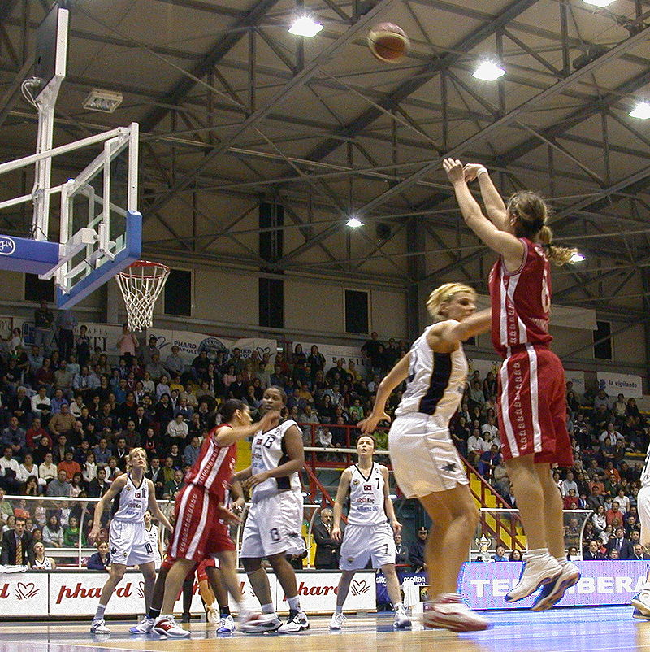
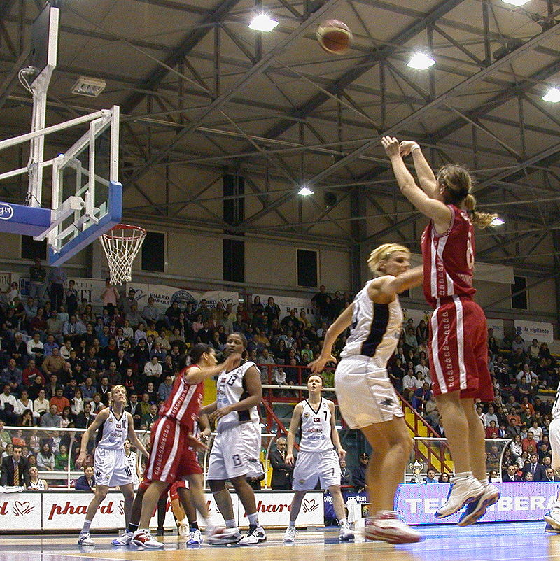
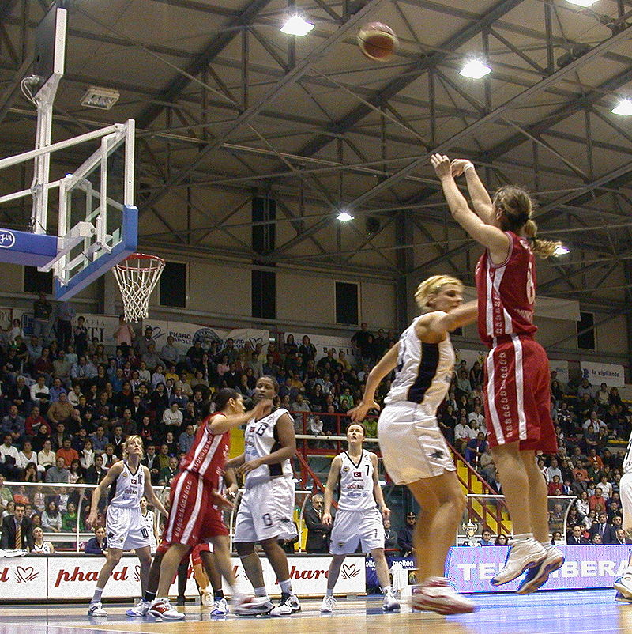

tag img
 

Documentacion util para html. 'enlace'
El baloncesto, también conocido como básquetbol, basquetbol o simplemente básquet, es un deporte de equipo, jugado entre dos equipos de cinco jugadores cada uno en cuatro períodos de cuartos de diez minutos cada uno, doce minutos cada cuarto en la NBA.
El baloncesto es un deporte de equipo donde dos equipos de cinco jugadores intentan anotar puntos introduciendo un balón en una canasta colocada a 3,05 metros de altura. El juego requiere pasar, driblar y lanzar la pelota, y el objetivo es superar al equipo contrario en puntos al finalizar el partido.
El baloncesto nació como una solución a la necesidad de realizar alguna actividad deportiva durante el invierno, en la escuela de la YMCA (Young Men's Christian Association) de Springfield, Massachusetts.[6] En 1891, James Naismith, profesor de educación física en la escuela, ideó el baloncesto como una actividad recreativa con una pelota basado en trece reglas.
